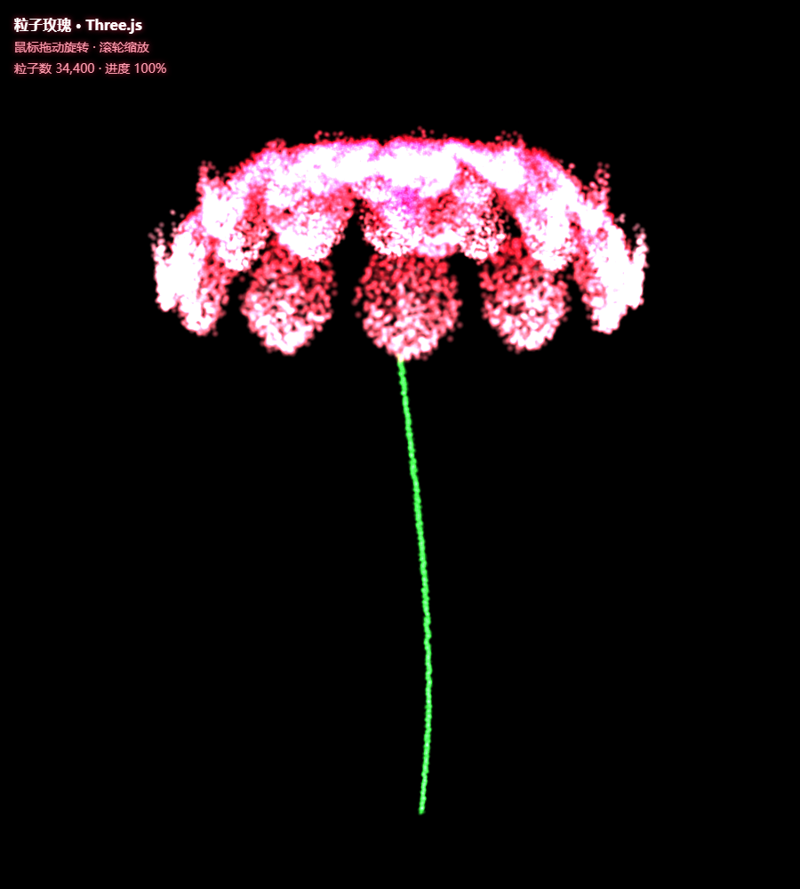
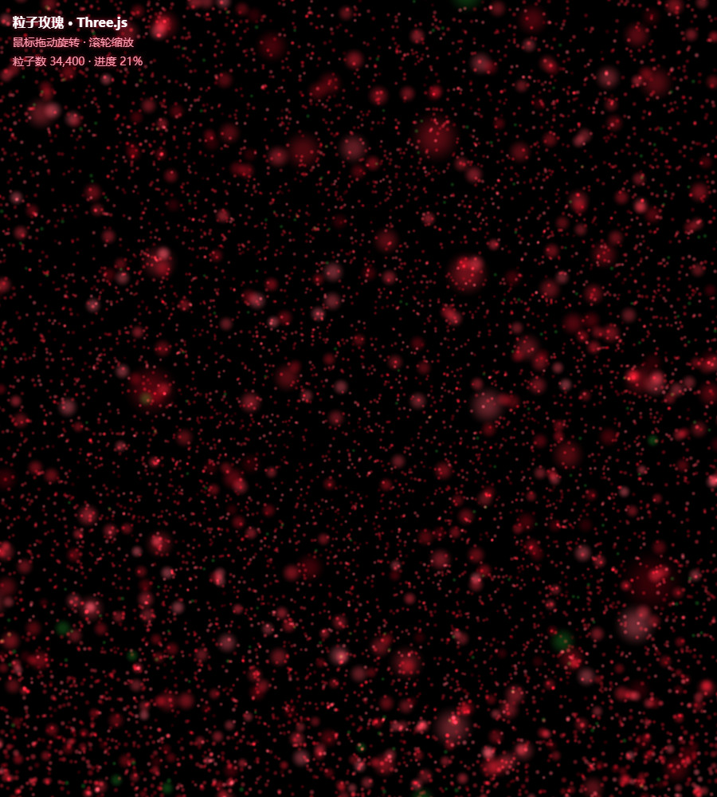
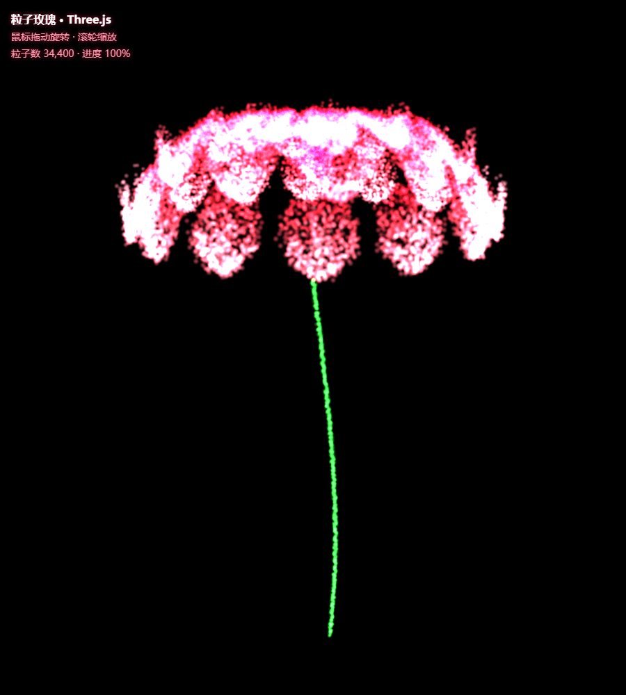
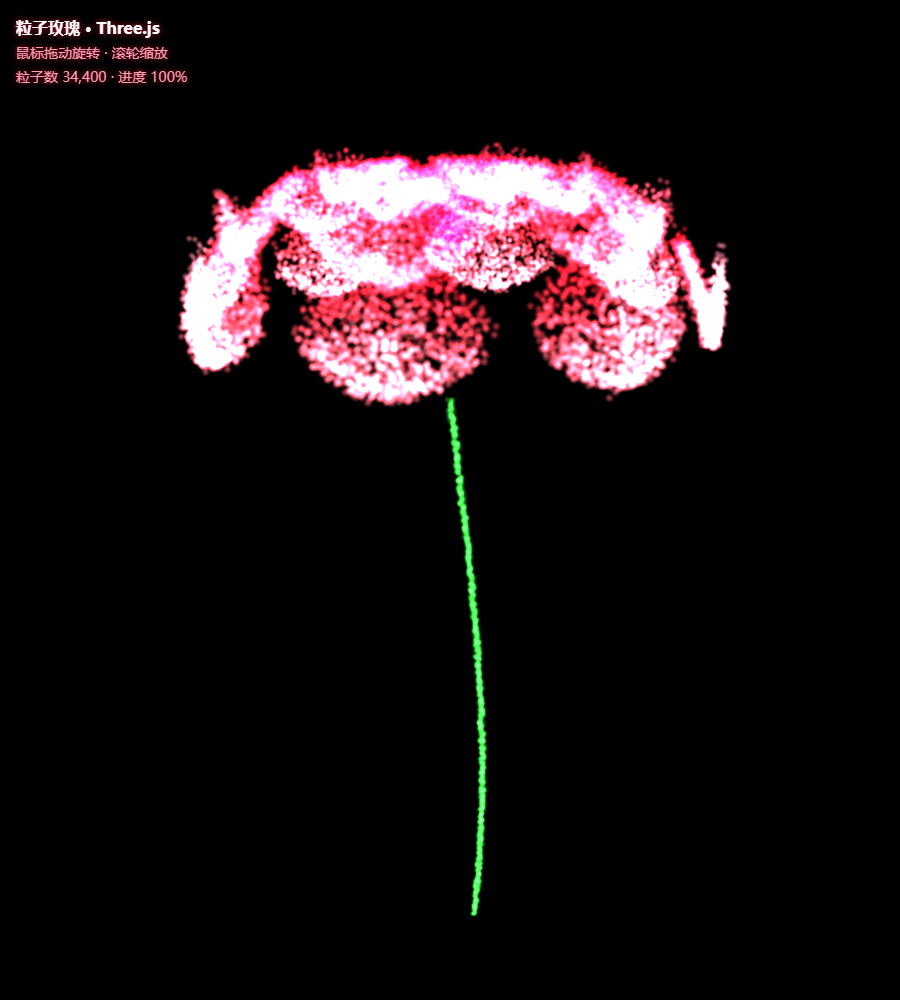
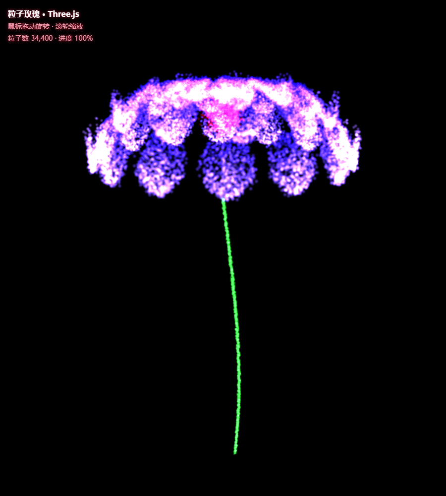
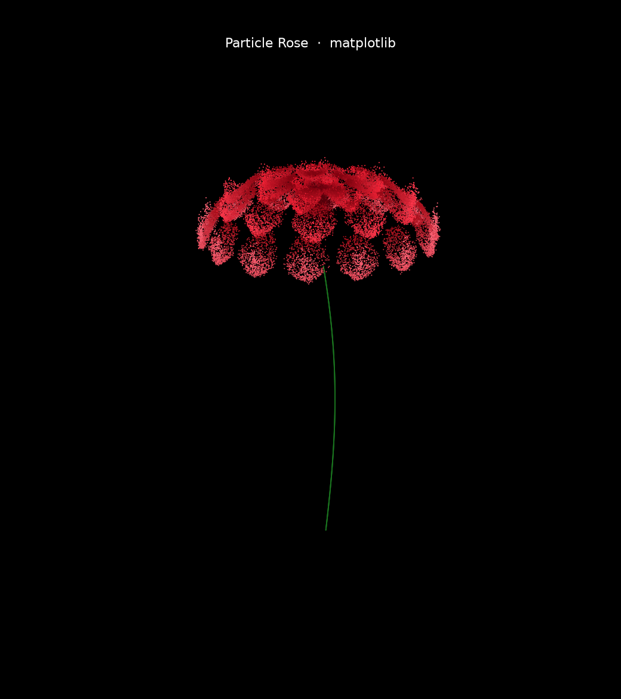

拆开看，"粒子玫瑰"是两个老技术的组合拳：
| 组成 | 负责什么 | 一句话原理 |
|---|---|---|
| 参数曲面 （几何） | 回答"粒子最终站哪里" | 用数学公式描述玫瑰的表面，在表面上海量采样点 |
| 粒子系统 （动画） | 回答"粒子怎么动起来" | 每个粒子有起点和终点，按时间插值从起点飞到终点 |
玫瑰负责"美"，粒子负责"动"——把一朵静态数学花变成一场汇聚动画，就是这件作品的全部秘密。没有建模、没有贴图、没有 AI，只有公式和插值。
这正是知识库里已有的程序化建模思想："写菜谱，不捏泥人"。玫瑰的"菜谱"分三段：
花头四层花瓣（内层小而直立包心 → 外层大而水平外翻），每层用一套花瓣公式
花蕊中心一小簇深红高斯散点
花茎一条带正弦微弯的绿色粒子线，从花底垂到 z≈−2.7
类比：花瓣层像"包烧卖"——最里面几皮捏得最拢（近乎竖直），越往外皮越摊开，最后几皮几乎平躺在笼屉上。数学上就是让每层的花瓣沿一条"从竖直弯到外翻"的弧线铺开。
一片花瓣是一个参数曲面，两个自变量：
t ∈ [0,1]：沿瓣长走（0=瓣根贴花心，1=瓣尖）
s ∈ [-1,1]：沿瓣宽走（-1=左缘，0=中肋，+1=右缘）
分四步搭出来：
① 中心线弧线：瓣根偏离竖直 a0、瓣尖偏离 a1，中间线性过渡 α(t)=a0+(a1−a0)t，投到水平/竖直：r=R·sin α，z=zb+R·cos α
② 瓣宽包络：瓣根窄、瓣中宽、瓣尖收：w(t)=0.40·(2π/n)·sin(π·t')^0.7——乘 (2π/n) 让瓣宽随瓣数自适应，瓣多则每瓣窄，留出缝隙不糊团
③ 横向内折：z += R·fold·s²·t——瓣面两侧比中肋低，呈勺状（s² 让中肋处为 0、两缘最大）
④ 瓣尖上卷：z += R·curl·tip²（tip 是 t>0.55 后平滑启动的量）——真实玫瑰外层瓣尖往回勾，这一项是"像不像玫瑰"的点睛之笔
单层花瓣只是"一个荷叶边"，玫瑰感来自四层递进 + 三个防糊手段：
| 层 | 瓣数 | 弧线 a0→a1 | 性格 |
|---|---|---|---|
| 内层 | 4 | 8°→35° | 直立捧心 |
| 中内 | 7 | 22°→56° | 半拢 |
| 中外 | 10 | 40°→76° | 摊开 |
| 外层 | 14 | 58°→93° | 近水平外翻+尖卷 |
防糊三招：① 瓣宽∝(2π/瓣数)，瓣多的层瓣窄，留缝；② 每层相位 phase 错开（π/7、π/4、π/16），上下层花瓣互相插空；③ 内层 z_base 抬高，让花心"凸"出来。
"包心结构"是玫瑰和荷花、蒲公英在公式层面的本质区别：瓣尖角 a1 从内向外逐层增大（35°→93°），一朵花里藏着一条"从抱拢到放开"的连续谱。
Three.js 里所有 3.4 万个点装进一个 THREE.Points 对象（场景图里的一个节点），发光感来自三个渲染开关的组合：
| 技术 | 作用 | 不开会怎样 |
|---|---|---|
| 点精灵 gl_PointSize | 每个顶点渲染成一个带纹理的正方形面片（不是 1 像素点） | 粒子小成沙砾，没有形体感 |
| 软边圆形 smoothstep | 片元着色器里按到点中心距离做圆形淡出 | 每个粒子是硬边方块，放大有"马赛克"感 |
| 加法混合 AdditiveBlending | 重叠粒子的颜色相加——叠得越多越亮，向着白色逼近 | 画面像平平的纸片，没有光感 |
加法混合 = "光的叠照"：两束光重叠处更亮。密集处自动过亮成白、稀疏处透出深红——粒子云的"辉光层次"是免费的。
配套纪律：开加法混合必须配 depthWrite:false（粒子不写深度），否则先画粒子会挡住后面的粒子，透明就失效了。
对比：matplotlib 版没有这些（普通散射点），所以同一样公式，matplotlib 版像"绒布剪影"，Three.js 版像"霓虹雕塑"——数学相同，观感差距全在渲染开关上。
每个粒子带两套坐标，存在同一条几何体的两个属性里：
aStart：混沌起点——半径 6 左右的大球壳随机点（略向下偏，像一片星云）aTarget：玫瑰目标点——Q3/Q4 的公式算出的位置
动画每帧只更新一个数：全局进度 uProgress: 0→1。顶点着色器里：
两个灵魂细节：
① 每粒子随机延迟 delay（0~0.35）——粒子不是齐步走，像潮水般此起彼伏地抵达；
② 缓动函数 easeInOutCubic——起步慢、中段快、到位前减速"刹车"，机械感秒变生命感。
到位后再叠加 sin(时间+种子) 的微小呼吸漂移——花就"活"了。
3.4 万粒子 × 每帧 60 次刷新 = 每秒 200 万次位置更新。两个做法的天壤之别：
| CPU（JS 逐帧改坐标） | GPU（顶点着色器） | |
|---|---|---|
| 数据在哪 | 内存 ↔ 显存来回搬 | 常住显存，零搬运 |
| 谁算 | JS 主线程串行 | 数千核心并行 |
| 每帧成本 | 3.4万次循环+上传 | 改 1 个 uniform 变量 |
着色器方案：JS 每帧只更新 uProgress 一个数（从 0 走到 1），3.4 万粒子的位置全部由 GPU 各自算——CPU 几乎零负担，还稳 60 帧。
两个容易忽略但决定成败的细节：
① 固定种子 = 可复现。JS 里 Math.random() 没法设种子，每次刷新是另一朵花；实验用 mulberry32(42) 自实现可播种随机数——种子固定，粒子云 100% 复现，改一个参数前后对比才有意义（这也呼应知识库的"确定性脚本"概念：同输入同输出，才好当实验品）。
② 高斯抖动 ≠ 均匀抖动。花瓣表面叠加 gauss()×0.012 的微小偏移（Box-Muller 变换生成正态分布）：均匀抖动像"沙纸"，高斯抖动中心密、边缘稀，才有绒雾般的体积感。
实测第一版 Three.js 截图整个花头糊成一张白饼。原因和药方：
| 病因 | 药方（本次实测有效） |
|---|---|
点尺寸 uSize=3.2 太大，相邻粒子面片大量重叠，加法叠加爆白 | 降到 0.62（经验：加法混合下点宜小而多，不宜大而糊） |
| 每个粒子不透明度太高 | 软边 alpha 乘 0.55 |
| 中心亮核 + 辉光增益过猛 | 亮核 0.35→0.10，颜色增益 (0.75+0.6g)→(0.80+0.5g) |
加法混合的调参心法：亮度是"叠"出来的，单粒子要刻意调暗；单看每个粒子灰暗得可惜，合在一起才刚刚好。

实验程序"是否真的画出了玫瑰"不能靠嘴说——用 Edge 无头模式自动截图当证据（呼应知识库"证据优先质检"：看实机画面，不看日志）：
三个关键开关：
① --use-angle=swiftshader：无 GPU 环境用 CPU 软渲染 WebGL（无头模式下 --disable-gpu 会禁真硬件加速，SwiftShader 兜底）；
② --virtual-time-budget=9000：把页面的时钟快进 9 秒——rAF 动画瞬间跑完 5.2 秒的汇聚，不用真等；
③ ?final=1：页面内置的跳关参数，直接把进度钉在 100%，截图结果确定。
对照知识库已有概念：
| 已有概念 | 本项目的新增量 |
|---|---|
| [[Three.js与场景图]] | Points 只是场景图里又一个节点；但动画发生在顶点着色器里，完全绕过场景图的变换层级——场景图管"静态组织"，着色器管"海量并行" |
| [[程序化建模]] | 上一课用代码拼"积木"（几何体+布尔），本课用参数方程描述连续曲面——菜谱更细了，细到每个点的坐标都有公式 |
| [[确定性脚本]] | 固定随机种子让粒子云可复现，是参数实验的对照前提 |
| [[证据优先质检ProofOverClaims]] | 无头截图 = AI/自动化流程的"眼睛"，WebGL 页面同样适用 |
新概念两条：粒子系统（起点/终点双缓冲+缓动插值的群体动画范式）与参数曲面采样（两个参数的方程描述三维表面）。
| 玩法 | 怎么改 |
|---|---|
| 节日表白页 / 贺卡 | 把 aTarget 换成心形参数方程（已有大量开源公式），其余一行不改 |
| 粒子烟花 | 目标点改"爆炸球面"，缓动改 ease-out，加重力项 |
| 星系/星云可视化 | 目标点按对数螺旋线分布（旋臂），颜色按半径渐变 |
| Logo / 文字粒子动画 | aTarget 从 Canvas 2D 读像素点坐标——任何图形都能"粒子化" |
| 数据雕塑 | 目标点=你的数据（如词频、传感器序列），把抽象数据变成可旋转的形体 |
一套"起点+目标+缓动"的管线，换掉目标点云，就是另一个作品——这就是 Creative Coding 的杠杆率。
实验目标：从零跑通"数学验证 → 交互动画 → 参数改造 → 自动化取证"四步，实验材料在 particle-rose\exercise\。
操作：curl -sL -o exercise/vendor/three.min.js https://unpkg.com/three@0.128.0/build/three.min.js
目的：本地化依赖，双击 HTML 就能跑（不走 npm install，也不联网）。
为什么是 r128：这是带 UMD 版（three.min.js 全局变量）的最后几个版本之一——新版只有 ES Module，而 ES Module 在 file:// 协议下会被 CORS 拦截，双击打不开。这是新手最常见的"明明没错却黑屏"的坑。
wc -c three.min.js 输出 603445 字节，文件头含 "three.js Authors"。操作：pip install matplotlib numpy → python exercise/rose_mpl.py
目的：动画会掩盖公式错误，先用最朴素的 3D 散点图确认"玫瑰长得对不对"。
实现：四层弧线花瓣（4/7/10/14 瓣）+ 花蕊 + 花茎，共 34,400 粒子，一次性渲染成静态图。
rose_mpl.png（实测 34400 粒子，约 3 秒出图）：黑底上一朵层叠红玫瑰、绿色弯茎。若改 a1 各层角度，花型立刻变（比如全改 90° 变成平盘子——这就是"包心结构"的对照实验）。操作：双击 exercise/rose.html（或命令行 start exercise\rose.html）。
目的：体验完整作品：34,400 粒子从星云汇聚成玫瑰，5.2 秒，鼠标可拖动旋转、滚轮缩放。
实现：同一套公式 + GPU 着色器动画（Q6/Q7）。
操作 & 预期：在浏览器地址栏的 URL 后面加参数刷新：
| URL | 现象（均已实测截图） |
|---|---|
rose.html?k=0.55 | 每层瓣数减半（4/7/10/14 → 2/4/6/8），花瓣变大变肥， rose_k06.png |
rose.html?blue=1 | 红玫瑰变蓝玫瑰（颜色通道整体映射），rose_blue.png |
源码里改 DURATION = 5200 | 汇聚变快/变慢，动画节奏随你掌控 |
操作：运行 Q10 的 msedge 无头命令。
目的：把"我画出来了"变成可存档、可对比的 PNG 证据——这是所有 AI/自动化图形工作流的验收基建。




